R5.MDEE.13 · Stratégie social media & e-CRM · M. Igor Perez
Cartographie de X
Un réseau social rétrécissant et qui devient acteur majeur de l'information en temps réel.
Sofian Chtioui & Romane Da-Silva · BUT3 TC MDEE · IUT de Roubaix · 8 septembre 2026
Ouverture : « Tout le monde ici a un avis sur X. Presque personne n'a les chiffres. Nous sommes allés les chercher sur la plateforme, au registre du commerce et dans les outils de trafic. » Annoncer la thèse tout de suite : X perd de l'audience et gagne en intensité. 40 secondes.
02 / 16
Huit étapes, quinze slides, dix minutes
1
Dates clés et actualités
Vingt ans, et un 2026 très agité.
5
Comptes à suivre
Trois comptes, pour ce qu'ils inventent.
2
Audience
Le monde, la France, et qui reste vraiment.
6
Qualité photo et vidéo
Les formats adaptés au fil.
3
Conseils et cas d'usage
Comment se lancer, et quand s'abstenir.
7
Outils de gestion
Qui fait quoi, et à quel prix.
4
Secteurs dominants
Les domaines où X reste incontournable.
8
Conclusion
Notre position, sans résumé.
Ne pas lire les huit lignes. Dire : « Ces huit points sont ceux de la consigne. Nous avons ajouté deux choses qu'elle ne demandait pas : les personas, et l'identité légale de X en France. C'est là que sont nos deux surprises. » 30 secondes.
03 / 16
Vingt ans en dix dates
Jack Dorsey, Biz Stone, Evan Williams et Dick Costolo, l'entrée en bourse, en 2013.
2006
Lancement le 15 juillet, par Jack Dorsey et trois associés.
2007
Le hashtag est inventé par un utilisateur, pas par l'entreprise.
2013
Entrée en bourse à New York.
2017
Passage à 280 caractères. Le format double.
2022
Musk rachète Twitter 44 Md$ et le retire de la bourse.
2023
23 juillet : l'oiseau devient X. Le nom Twitter est abandonné.
2024
17 mai : twitter.com redirige enfin vers x.com.
2025
Mars : xAI, la société d'intelligence artificielle d'Elon Musk, rachète X pour 33 Md$.
2025
Décembre : 120 M€ d'amende européenne pour manquement au Digital Services Act.
2026
Février : xAI fusionne avec SpaceX. X n'est plus l'activité principale du groupe.
N'en garder que trois à l'oral. 2017 : le format double, X est le seul réseau à avoir changé son unité d'écriture. 2023 : le rebranding abandonne l'un des noms les plus connus au monde et le verbe « tweeter » qui allait avec ; la plateforme garde ses utilisateurs mais doit reconstruire sa notoriété sur une lettre. 2025 : xAI, la société d'intelligence artificielle d'Elon Musk qui développe Grok, rachète X ; le réseau devient une source de données et d'audience pour entraîner et diffuser des modèles. Si on demande le DSA : le Digital Services Act est la loi européenne de 2022 qui oblige les très grandes plateformes à la transparence sur la publicité, l'algorithme et la modération ; l'amende de 120 M€ sanctionne des manquements à ces obligations. Si on demande 2026 : xAI fusionne avec SpaceX, le lanceur spatial de Musk, donc X se retrouve dans un groupe dont le métier est l'espace et l'intelligence artificielle, pas le réseau social. 60 secondes.
04 / 16
À qui appartient X
Groupe SpaceX et xAI
xAI
X, le réseau social, racheté par Musk en 2022 pour 44 Md$.
xAI, sa société d'intelligence artificielle, rachète X en mars 2025 pour 33 Md$.
SpaceX et xAI fusionnent en février 2026. X n'est plus l'activité principale du groupe.
En France, la société s'appelle encore Twitter
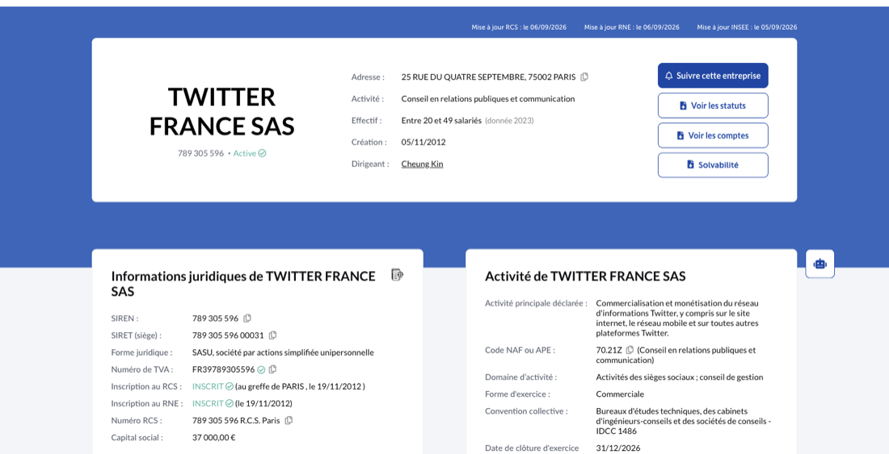
12,9 M€de chiffre d'affaires
20 à 49salariés
678 k€de résultat net
Activité déclarée : conseil en relations publiques, pas la publicité. Celle-ci est facturée depuis l'Irlande.
Sources : Pappers (consulté le 06/09/2026), fiche TWITTER FRANCE SAS · CNBC · The New York Times. Registre du commerce interrogé avec Claude.
Deux idées, une par colonne. À gauche : X n'est plus une entreprise, c'est une poupée russe. Le réseau appartient à xAI depuis mars 2025, et xAI a fusionné avec SpaceX en février 2026. La stratégie de Musk n'est pas de faire vivre un réseau social, c'est de nourrir une intelligence artificielle avec le seul flux de conversations mondiales en temps réel qu'il possède. À droite, la surprise : la structure française s'appelle encore TWITTER FRANCE SAS, facture 12,9 M€ et se déclare cabinet de relations publiques. Ce n'est pas elle qui vend la publicité, celle-ci part de l'Irlande. Lâcher la phrase : « Le nom n'a jamais changé parce que le nom n'a jamais été le produit. » 80 secondes.
05 / 16
Ce que X a changé de son identité et de son produit
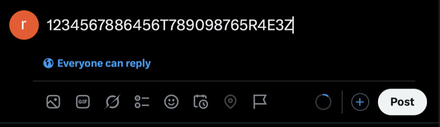
Écrire sur X. De 140 à 280 caractères, plus les indicateurs.
Le hashtag reste le classement du réseau.
Oiseau : le gazouillisLéger, bavard, publicX : l'application à tout faireNeutre, sérieux, extensible
Premium 4,67 €Premium+ 22,17 €Badge, Grok, sans publicité
Source : X (consulté le 06/09/2026), captures de l'interface et de la page d'abonnement faites par Sofian et Romane.
Slide de respiration après le schéma de propriété. Le fil rouge à dire : l'oiseau désignait une conversation, la lettre X ne désigne rien et laisse la place à tout. Trois idées : on écrit toujours en 280 caractères, le hashtag de 2007 sert encore de classement, et le changement de logo dit tout de la stratégie. L'oiseau désignait une conversation, la lettre X ne désigne rien et laisse la place à tout : paiement, vidéo, intelligence artificielle. Finir sur le prix : X ne vit plus seulement de la publicité, il vend un abonnement à 4,67 € qui donne le badge et l'accès à Grok. 60 secondes.
06 / 16
L'audience mondiale, en juillet 2026
4,7 Mdvisites par mois
5esite mondial
12:15durée moyenne
69,8 %de trafic direct
D'où viennent les visites
États-Unis29,0 %
Japon10,9 %
Royaume-Uni4,5 %
Turquie3,8 %
Espagne3,6 %
* La France n'apparaît dans aucun des cinq premiers pays.
Qui vient
68 %
68 % d'hommes
32 % de femmes
25-34
ans, tranche dominante
14,3
pages par visite
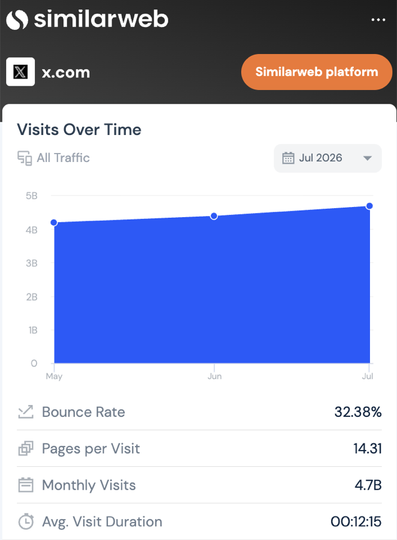
Source : Similarweb (consulté le 06/09/2026), extension Chrome ouverte sur x.com, données de juillet 2026, estimées. Extension ouverte et relevée avec Claude.
Le chiffre qui compte n'est pas 4,7 milliards, c'est 12 minutes 15 et 69,8 % de trafic direct. Personne n'arrive sur X par hasard, on tape l'adresse. C'est une habitude, pas un canal de découverte. Et une habitude, une marque ne l'achète pas en une campagne. 50 secondes.
07 / 16
France : deux millions de personnes parties en un an
Audience publicitaire potentielle
15,5 millions
contre 17,5 millions en 2024
Audience plutôt masculine
62 %
Secteurs très présents
ActualitéPolitiqueTechSport
Usage centré sur le temps réel
réactions aux événementspartages de tendancesactualité brûlante
7e
réseau en France
3h45
par mois et par personne
Part de chaque génération présente sur X
Génération Z27 %
Millennials18 %
Génération X14 %
Baby-boomers10 %
Génération silencieuse7 %
X est le réseau où les plus jeunes sont les plus sur-représentés, sur la plus petite base.
Sources : Ecommerce Nation (consulté le 06/09/2026), Guides 2024 p. 8 et 2025 p. 5 · Statista (consulté le 06/09/2026), janvier 2025 et 2024.
Deux chiffres, une phrase. Moins deux millions de personnes touchables en un an, et sept minutes par jour. Puis le retournement : c'est pourtant le réseau où la génération Z est la plus sur-représentée. Donc X est petit, masculin, jeune et intense. Une marque qui le traite comme un média de masse se trompe d'outil. 60 secondes.
08 / 16
L'utilisateur réel et celui qu'une marque doit viser
Persona A · l'utilisateur réel
Théo, 27 ans
Développeur junior à Lille
Métier
Développeur junior
Ville
Lille
Fréquence
5 à 8 ouvertures par jour
Temps
7 minutes par jour, sur mobile
Arrivée
En direct, jamais par une recherche
Ce qu'il fait sur X
Il lit et ne publie pas. Il suit l'actualité, la tech, le football et les mèmes. Il met en signet plutôt qu'il n'aime, et filtre mentalement la publicité.
Ce qui le motive
S'informer vite
Se divertir
Participer, répondre
Acheter
Ce qu'il vaut pour une marque : de la visibilité, presque aucune conversion.
Persona B · la cible d'une marque
Camille, 34 ans
Journaliste, spécialiste de son secteur
Métier
Journaliste et analyste
Ville
Paris
Audience
200 à 2 000 abonnés, mais les bons
Usage
Veille professionnelle quotidienne
Réaction
Dans l'heure, ou jamais
Ce qu'elle fait sur X
Elle publie et cite. Elle y suit ses sources, ses concurrents et les événements en direct, et relaie ce qui est utile ou drôle. Un seul partage d'elle vaut mille impressions achetées.
Ce qui la motive
Veiller sur son secteur
Publier et commenter
Se constituer un réseau
Acheter
Ce qu'elle vaut : de la crédibilité et une portée au second degré. C'est pour elle que l'on écrit.
Source : les données d'audience des slides précédentes. Lecture des chiffres, pas une étude terrain. Premier jet des deux profils avec ChatGPT, réécrit par nos soins.
Expliquer pourquoi deux. L'audience que l'on a n'est pas celle pour qui l'on écrit. Sur X, la majorité passive c'est Théo, mais toute la valeur est chez Camille, parce que X est un réseau de relais et non un réseau de portée. Montrer les jauges : Théo ne participe pas et n'achète pas, Camille publie et relaie. Puis la phrase : « Sur X, on ne parle pas à son audience, on parle à ceux qui vont vous répéter. » 60 secondes.
09 / 16
Les domaines où X reste incontournable
1
Actualité et politique
Le réflexe pendant un événement en direct
2
Tech et intelligence artificielle
Les modèles y sont annoncés avant le communiqué
3
Sport
Second écran pendant les matchs
4
Jeu vidéo et divertissement
Dates de sortie et notes de mise à jour
5
Finance et crypto
Le commentaire de marché en temps réel
6
Service client
La réclamation publique, sous les yeux de tous
Sources : Ecommerce Nation (consulté le 06/09/2026), Guides 2024 p. 8-9 et 2025 p. 5 · SocialHub Magazine (consulté le 06/09/2026), n° 6, 2026.
Ne pas énumérer les six secteurs, la salle décroche. En donner deux, puis sauter directement à l'idée de l'horloge, c'est l'analyse que la consigne attend. « X n'est pas une plateforme de secteur, c'est une plateforme d'échéance. » 45 secondes.
10 / 16
Se lancer sur X : nos six recommandations
01 Publier tous les jours, ou ne pas commencer
Un à trois messages par jour. Sur un réseau construit sur la fraîcheur, un rythme hebdomadaire passe inaperçu.
02 Répondre avant de publier
Passer le premier mois à répondre aux autres. Les réponses ne coûtent rien et c'est ainsi qu'un nouveau compte est découvert.
03 Le texte d'abord, l'image ensuite
X est le seul grand réseau où une phrase seule dépasse un visuel travaillé. Garder l'image pour la preuve.
04 Une voix, pas une voix de marque
Burger King France ne suit aucun compte et écrit comme une personne. Cela marche parce que c'est constant.
05 Suivre l'événement, jamais le calendrier
Un message publié 40 minutes après un match vaut dix messages programmés un mois à l'avance.
06 Mesurer les signets et les réponses
Un « j'aime » est poli, un signet signifie utile, une réponse signifie vivant.
Sources : Ecommerce Nation (consulté le 06/09/2026), quatre objectifs de la fiche X · X (consulté le 06/09/2026), comptes observés. Liste soumise à ChatGPT, trois conseils génériques écartés.
C'est la partie pratique, le professeur la demande explicitement. Dire à l'oral les conseils 1, 2 et 6, ce sont les contre-intuitifs. Insister sur « répondre avant de publier » : c'est gratuit, et personne ne le fait. 60 secondes.
11 / 16
Les usages pertinents et ceux à écarter
Pertinent
+Les événements en direct : matchs, conférences, lancements, crises.
+Le service client public, qui inspire plus confiance qu'un formulaire.
+La crédibilité tech et B2B : journalistes, développeurs, investisseurs.
+La veille sur les concurrents et le secteur, gratuitement et en temps réel.
+Les essais de ton, le seul endroit où une marque peut se permettre d'être sobre et directe.
À écarter
–La portée de masse en France : 15,5 M touchables et en baisse. Préférer Instagram ou TikTok.
–La vente directe : pas de boutique native et une conversion faible.
–Les femmes de plus de 45 ans, structurellement absentes de la plateforme.
–Le récit visuel soigné : le fil est conçu pour le texte et recadre les images.
–Les secteurs sensibles à la sécurité de marque : la modération est contestée, une amende de 120 M€ en atteste.
Sources : Ecommerce Nation (consulté le 06/09/2026), Guides 2024 et 2025 · Commission européenne (consulté le 06/09/2026), décision DSA de décembre 2025.
La colonne de droite est celle que l'on retiendra. Dire la dernière ligne à voix haute : « Si votre marque ne peut pas se permettre d'apparaître à côté de n'importe quoi, X n'est pas un canal, c'est un risque. » 45 secondes.
12 / 16
Les comptes et publications les plus aimés
MondeFrancePublications
Elon Musk
@elonmusk
241,5 M
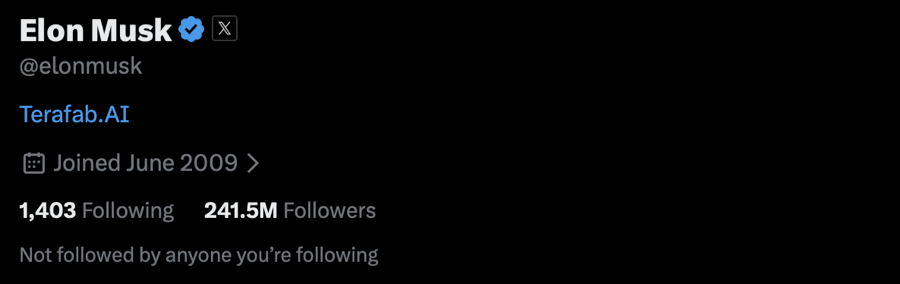
Barack Obama
@BarackObama
119,0 M
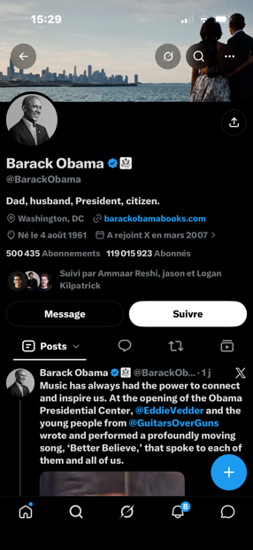
Cristiano Ronaldo
@Cristiano
114,1 M
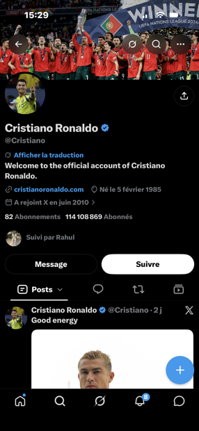
Donald Trump
@realDonaldTrump
111,8 M
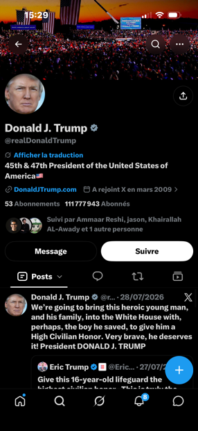
Narendra Modi
@narendramodi
107,2 M
Kylian Mbappé
@KMbappe
23,7 M
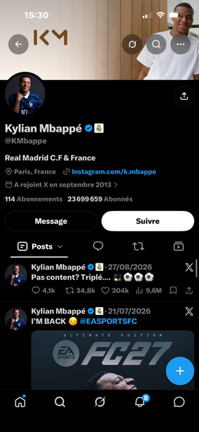
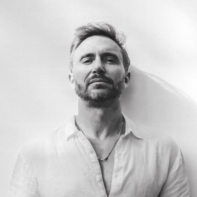
David Guetta
@davidguetta
15,4 M
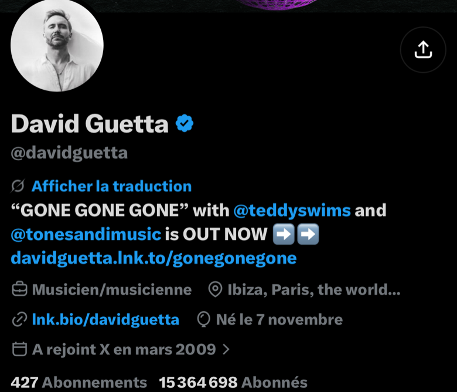
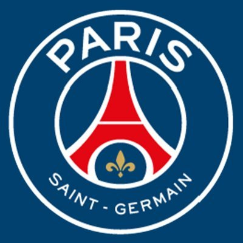
Paris Saint-Germain
@PSG_inside
14,8 M
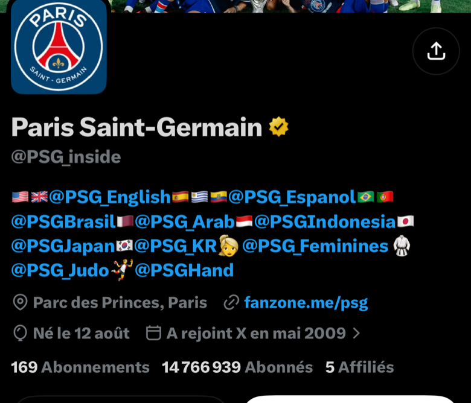
Emmanuel Macron
@EmmanuelMacron
11,0 M
Le Monde
@lemondefr
9,9 M
Sa famille annonce sa mort
@chadwickboseman
6,6 M
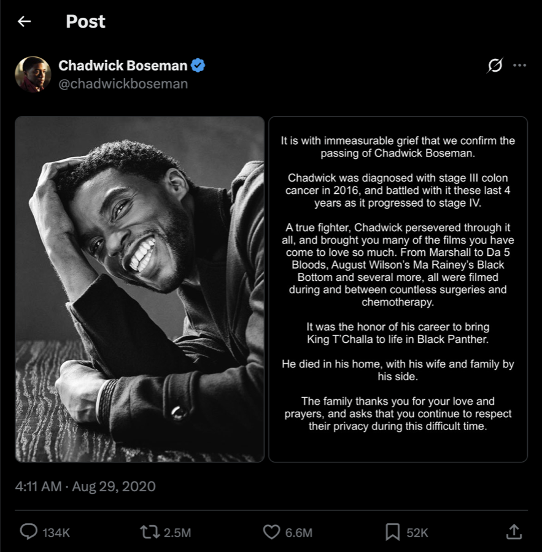
« Je rachète Coca-Cola »
@elonmusk
4,3 M
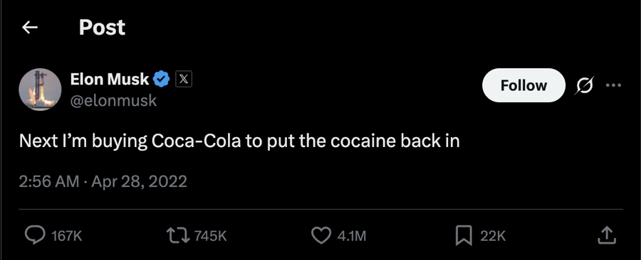
Citation de Nelson Mandela
@BarackObama
3,6 M
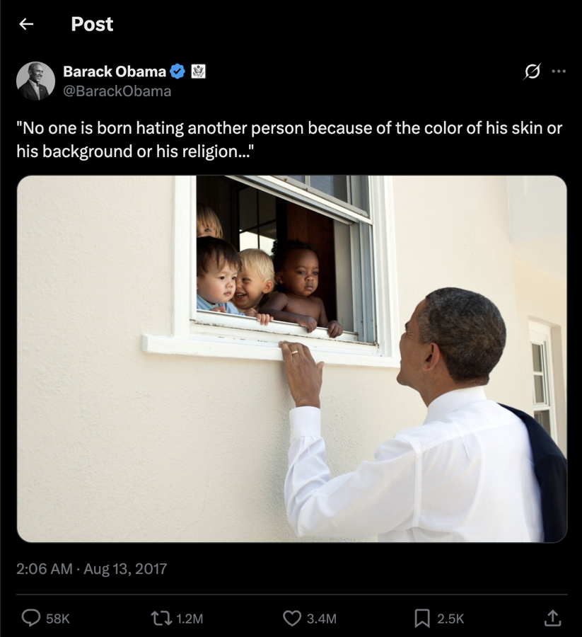
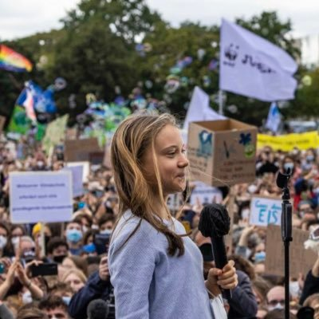
Réponse à Andrew Tate
@GretaThunberg
3,5 M
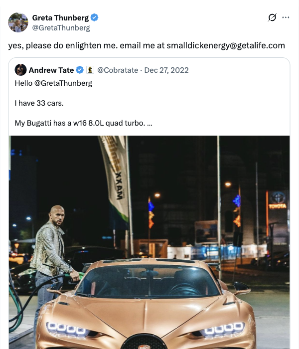
« It's a new day in America »
@JoeBiden
3,5 M
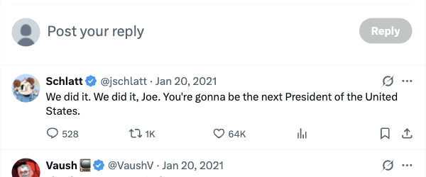
Sources : X (consulté le 06/09/2026), captures des profils et des publications faites par Sofian et Romane · Wikipédia (consulté le 06/09/2026), listes des comptes les plus suivis et des publications les plus aimées.
Trois vues sur une seule slide. Montrer le top mondial, basculer sur la France en disant que le premier compte français pèse un dixième du premier compte mondial, puis basculer sur les publications et livrer la phrase : aucune des cinq publications les plus aimées de l'histoire n'est une publication de marque. Trois relèvent du deuil ou de la politique. 70 secondes.
13 / 16
Trois comptes, trois inventions
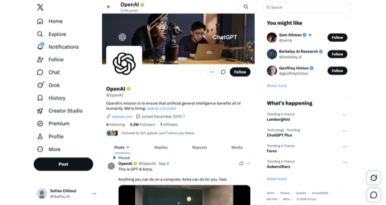
@OpenAI 5,2 M d'abonnés
Salle de presseAnnonce en texte brutSans communiquéLe lancement devient un post
@grok 9,0 M d'abonnés
IA native du réseauRépond dans le fil39 M de publicationsL'outil vit dans le flux
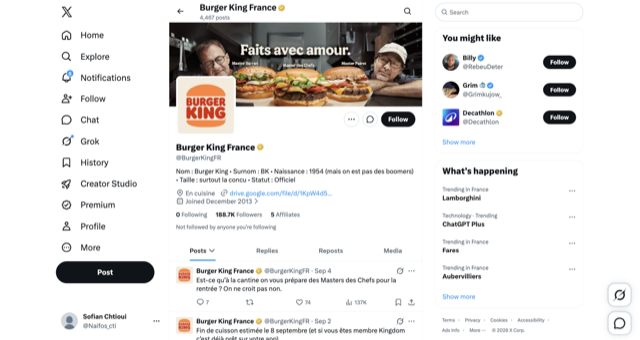
@BurgerKingFR 188,7 K d'abonnés
Zéro abonnementTon de personneMême voix depuis 2013Discipline
Source : X (consulté le 06/09/2026), captures des trois profils faites par Sofian.
Développer Burger King, c'est le cas actionnable pour une marque française. Zéro abonnement n'est pas un détail, c'est une déclaration : le compte est un diffuseur, pas un membre de la communauté. C'est l'inverse de tous les manuels de social media, et cela fonctionne. OpenAI a fait de X sa salle de presse : le lancement d'un produit est devenu une publication. Grok est une intelligence artificielle qui vit dans le fil et répond quand on la mentionne. Poser la question à la salle : oseriez-vous recommander le zéro abonnement à un client ? 60 secondes.
14 / 16
Les formats adaptés au fil
Images
400 × 400photo de profil
1500 × 500bannière
1200 × 1200publication carrée
1200 × 628publication paysage
1200 × 675publicité · 600 × 335 minimum
Vidéo
1920 × 1200publication · 512 Mo · 2 min 20 maximum
800 × 800carrousel carré · 2 à 6 vidéos
800 × 450carrousel paysage · 2 à 6 vidéos
Publicité1:1 ou 16:9 · 1 Go · MP4 ou MOV
Source : Ecommerce Nation (consulté le 06/09/2026), Guide des réseaux sociaux 2024, fiche X, onglet Formats, p. 9.
Ne pas lire les tailles, elles sont là pour que le document reste utile après la présentation. Dire seulement la règle : le fil recadre en paysage et lit sans le son, donc le carré survit, le portrait est coupé, et une vidéo qui a besoin du son est déjà perdue. Deux minutes vingt est le plafond, trente secondes la bonne durée. 30 secondes, c'est la slide la plus rapide.
15 / 16
Les outils de gestion et leurs limites
Outil
À quoi il sert vraiment
Où il s'arrête
X Pro(anciennement TweetDeck)
Surveiller plusieurs colonnes en direct pendant un événement, comme une salle de rédaction.
Natif, désormais réservé aux abonnés X Premium. Aucun véritable rapport d'analyse.
X for Business
Créer et financer les campagnes publicitaires.
Publicité uniquement, aucune gestion de communauté.
Buffer
Programmer sur plusieurs réseaux, pour de petites équipes, à faible coût.
Analyse légère, pas d'écoute du web.
Hootsuite
Tableau de bord, multi-comptes, circuit de validation. Le standard des agences.
Coût élevé pour un seul réseau.
Audiense Connect
Segmenter l'audience et comprendre qui suit le compte.
Spécialisé sur X, payant.
Brandwatch et Mention
Écoute du web et alertes en cas de crise.
Tarification réservée aux grandes entreprises.
Sources : Ecommerce Nation (consulté le 06/09/2026), onglet Outils du Guide 2024 et Guide 2025 p. 5 · pages tarifaires des éditeurs (consultées le 06/09/2026).
Le professeur a annoncé qu'il insisterait sur les outils pour cette première présentation : livrer la recommandation à l'oral, elle n'est plus écrite sur la slide. Dire : « Pour un lancement, X Pro pour surveiller, Buffer pour publier, et une alerte Mention gratuite sur le nom de la marque. Moins de 20 € par mois. Hootsuite seulement quand plusieurs personnes doivent valider une publication. » La dernière phrase est l'argument : « l'outil est un symptôme de l'équipe, pas du réseau. » 60 secondes.
16 / 16
Conclusion
Rien à lire, tout se dit. Trois phrases, puis le silence. « X n'est plus un canal de portée, c'est un canal de citation. » « Il appartient désormais à un laboratoire d'intelligence artificielle, et Grok écrit déjà dans le fil. » « La question pour 2027 n'est donc pas de savoir si X garde ses utilisateurs, mais s'il en a encore besoin. » S'arrêter là. 40 secondes.
Annexe
Nos sources et l'usage réel des outils d'intelligence artificielle
Sources
Ecommerce Nation, Guide des réseaux sociaux 2024 p. 8-9 et 2025 p. 5
Support de cours « class 1 & 2 », slides 51, 52 et 56, et syllabus slides 19 à 21
SocialHub Magazine n° 6, 2026
Similarweb, données de juillet 2026 relevées sur x.com
Pappers, fiche TWITTER FRANCE SAS, SIREN 789 305 596
Wikipédia, articles sur X, les publications les plus aimées et les comptes les plus suivis
Nos propres captures faites sur X
Toutes ces sources ont été consultées le 06/09/2026.
Outils d'intelligence artificielle et leurs limites
ChatGPT : nous a permis d'avoir des idées de contenu et de la diversité dans les contenus. Il a aussi produit six conseils génériques que nous avons supprimés : il écrit ce qui est moyen, exactement ce qu'une présentation doit éviter.
Claude : a fait la présentation, a mené des recherches approfondies en ligne pour nos sources et nous a aidés à formuler correctement. Il s'est trompé une fois sur une date au premier passage : c'est pour cela que chaque chiffre porte ici sa source et sa date.
Ce que nous n'avons pas délégué : l'angle, la position et l'ouverture. Les outils ont trouvé les faits, l'argument est de nous.
Sofian Chtioui & Romane Da-Silva · 8 septembre 2026